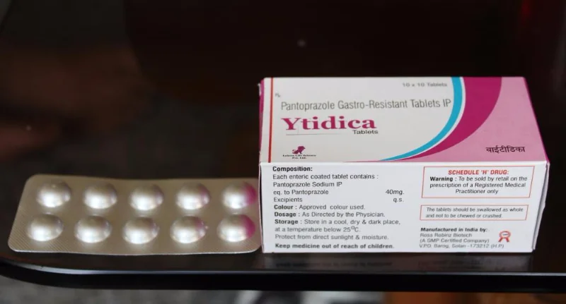

| Phone: +91 9320305671, +91 7755905671 | E-mail: info@leleon.in |
Services
Home
/ Services
Available services
YTIDICA (PANTAPROZOLE 40MG)

Medical uses
Pantoprazole is used for short-term treatment of erosion and ulceration of the oesophagus caused by
gastroesophageal reflux disease
. Initial treatment is generally of eight weeks' duration, after which another eight-week course of treatment may be considered if necessary.
[1]
It can be used as a maintenance therapy for long-term use after initial response is obtained. Pantoprazole may also be used in combination with antibiotics to treat ulcers caused by
Helicobacter pylori
.When treating
H. pylori
ulcers, pantoprazole is given twice daily,
[3]
in contrast to
gastroesophageal reflux disease
, where it is usually given once daily. Typical treatment courses for
H. pylori
range from 10 to 14 days.
Adverse effects
Infection:
Stomach acid plays a role in killing ingested bacteria. Use of pantoprazole may increase the chance of developing infections such as pneumonia, particularly in hospitalized patients.
Common
|
Serious
|
Pharmacology
Pantoprazole is metabolized in the liver by the
cytochrome P450
system.Metabolism mainly consists of
demethylation
by
CYP2C19
followed by
sulfation
. Another metabolic pathway is oxidation by
CYP3A4
. Pantoprazole metabolites are not thought to have any pharmacological significance. Pantoprazole is relatively free of drug interactions;
[7]
however, it may alter the absorption of other medications that depend on the amount of acid in the stomach, such as
ketoconazole
or
digoxin
. Generally inactive at the acidic pH of stomach, thus it is usually given with a prokinetic drug. Pantoprazole binds irreversibly to H+K+ATPase (proton pumps) and suppresses the secretion of acid. As it binds irreversibly to the pumps, new pumps have to be made before acid production can be resumed. The drug's plasma half-life is about 2 hours.
Pharmacokinetics
Absorption
- Bioavailability: (oral, delayed release tablets), about 77%
- Effect of food: (oral, delayed-release tablets), AUC and C max no effect, T max variable, absorption delayed, no net effect
- Effect of food: (oral, for-delayed-release suspension), administer 30 minutes before a meal
- T max , oral, delayed-release suspension: 2.0 to 2.5 h
- T max , oral, delayed-release tablets: 2.5 h
- T max , oral,delayed-release tablets: 1.5 to 2.0 hours (pediatrics)
- Protein binding: about 98% to primarily albumin
- Vd, extensive metabolizers (IV): about 11 to 23.6 l
- Vd, pediatrics (oral): 0.21 to 0.43 l/kg.
- Hepatic; cytochrome P450 CYP2C19; minor metabolism from CYP3A4, 2D6, and 2C9
- Fecal: (oral or IV, normal metabolizers), 18%
- Renal: (oral or IV, normal metabolizers), about 71%, none as unchanged
- Dialyzable: no (hemodialysis)
- Total body clearance: (IV) 7.6 to 14 l/hour.
- Total body clearance: (oral, pediatrics) 0.18 to 2.08 l/h/kg
- Oral or IV, 1 hour
- Oral or IV, slow metabolizers, 3.5 to 10 hours
- Pediatrics, 0.7 to 5.3 hours
LELEON PLUS:


Methylcobalamin-1500 mcg
Alpha Lipoic Acid-100 mg
Folic Acid (Vit B9)-1.5 mg
Pyridoxine-3 mg
Alpha Lipoic Acid-100 mg
Folic Acid (Vit B9)-1.5 mg
Pyridoxine-3 mg
Methylcobalamin
Methylcobalamin is a type of Vitamin B12. Vitamin B12 comes in several kinds including hydroxy-, cyano-, and adenosyl-, but only the methyl and adenosyl forms are active within the body. Deficiency occurs from a lack of "intrinsic factor" a mucoprotein enzyme in gastrointestinal tract,from tapeworm infestation or excessive bacteria in stomach and intestines.
Methylcobalamin donates methyl groups to the myelin sheath that insulates nerve fibres and regenerates damaged neurons. In a B12 deficiency, toxic fatty acids destroy the myelin sheath but high enough doses of B12 can repair it.
Methylcobalamin donates methyl groups to the myelin sheath that insulates nerve fibres and regenerates damaged neurons. In a B12 deficiency, toxic fatty acids destroy the myelin sheath but high enough doses of B12 can repair it.
Folic acid (Vitamin B9)
Folic acid (Vitamin B9), a member of the B-complex vitamins, is a water-soluble vitamin that is unstable in heat and light.
Folic acid is required for DNA synthesis and cell growth and is important for red blood cell formation, energy production as well as the forming of amino acids. Folic acid is essential for creating haeme, the iron containing substance in hemoglobin, crucial for oxygen transport. It is important for healthy cell division and replication, since it is acts as a coenzyme for RNA and DNA synthesis. It is also required for protein metabolism and in treating folic acid anemia. Folic acid also assists in digestion, and the nervous system, and works at improving mental as well as emotional health. This nutrient may be effective in treating depression and anxiety. Folic acid is very important in the development of the nervous system of a developing fetus.
Folic acid is required for DNA synthesis and cell growth and is important for red blood cell formation, energy production as well as the forming of amino acids. Folic acid is essential for creating haeme, the iron containing substance in hemoglobin, crucial for oxygen transport. It is important for healthy cell division and replication, since it is acts as a coenzyme for RNA and DNA synthesis. It is also required for protein metabolism and in treating folic acid anemia. Folic acid also assists in digestion, and the nervous system, and works at improving mental as well as emotional health. This nutrient may be effective in treating depression and anxiety. Folic acid is very important in the development of the nervous system of a developing fetus.
Vitamin B6
Vitamin B6 is a water-soluble vitamin that exists in three major chemical forms: pyridoxine, pyridoxal, and pyridoxamine. It performs a wide variety of functions in our body and is essential for our good health. Vitamin B6 is needed for more than 100 enzymes involved in protein metabolism. It is also essential for red blood cell metabolism. The nervous and immune systems need vitamin B6 to function efficiently, and it is also needed for the conversion of tryptophan (an amino acid) to niacin (a vitamin).
Alpha Lipoic Acid
Alpha Lipoic Acid chemically is 1,2-dithiolane-3-pentanoic acid. It is a sulphur containing substance, which is readily converted from its reduced state, dihydrolipoic acid. It can be found in foods such as meats and spinach. It is readily absorbed in the blood stream and can also cross blood brain barrier.
It functions as a cofactor for enzymes involved in conversion of energy from glucose and fats, Krebs cycle (metabolism of fats and carbohydrates). It lowers blood sugar. It is a powerful antioxidant and prevents cellular damage from free radicals thereby reducing oxidative stress. It increases production of glutathione, which helps dissolves toxic substances in liver.
It functions as a cofactor for enzymes involved in conversion of energy from glucose and fats, Krebs cycle (metabolism of fats and carbohydrates). It lowers blood sugar. It is a powerful antioxidant and prevents cellular damage from free radicals thereby reducing oxidative stress. It increases production of glutathione, which helps dissolves toxic substances in liver.
INDICATIONS
Diabetic Neuropathies, Peripheral Neuropathies,Hyperhomocytemia,Megaloblastic anemia,Vit.B12 deficiency Infections,Neurological pain, Sensory disturbances, Rheumatoid Arthritis,Osteoporosis, Gout,Mood disorder,Sleep disturbances, Alzheimer's Disease , Multiple sclerosis, Parkinson's disease, Heart rate variability, Fibromyalgia , Bell's palsy, Herpes Zoster , Cancer, HIV
DOSAGE
1 TABLET a day or as recommended the physician
CONTRAINDICATIONS
Hypersensitivity to any ingredient of the composition
Methylcobalamin: Anaphylactic reaction and other sensitivity reactions
Tobacco amblyopia
Folic acid: Addisonian pernicious anemia, malignant disease.
Pyridoxine Hcl: concomitant administration of levodopa.
Methylcobalamin: Anaphylactic reaction and other sensitivity reactions
Tobacco amblyopia
Folic acid: Addisonian pernicious anemia, malignant disease.
Pyridoxine Hcl: concomitant administration of levodopa.
LELEONCLAV 625 MG:

{kind=link}
Uses
Amoxicillin
/clavulanic acid is a combination
penicillin
-type antibiotic used to treat a wide variety of
bacterial infections
. It works by stopping the growth of bacteria.
This antibiotic treats only bacterial infections. It will not work for viral infections (such as common cold , flu ). Unnecessary use or misuse of any antibiotic can lead to its decreased effectiveness.
How to use amoxicillin-potassium clavulanate
Take this medication by mouth with a meal or snack as directed by your doctor, usually every 12 hours. Do not take this medication with a high-fat meal because it can decrease the absorption of the drug. Do not crush or chew extended-release tablets. Doing so can release all of the drug at once, increasing the risk of side effects. Also, do not split the tablets unless they have a score line and your doctor or pharmacist tells you to do so. Swallow the whole or split tablet without crushing or chewing.
Antibiotics work best when the amount of medicine in your body is kept at a constant level. Therefore, take this drug at evenly spaced intervals. To help you remember, take it at the same times each day.
Continue to take this medication until the full prescribed amount is finished, even if symptoms disappear after a few days. Stopping the medication too early may allow bacteria to continue to grow, which may result in a return of the infection.
Tell the doctor if your condition persists or worsens.
This antibiotic treats only bacterial infections. It will not work for viral infections (such as common cold , flu ). Unnecessary use or misuse of any antibiotic can lead to its decreased effectiveness.
How to use amoxicillin-potassium clavulanate
Take this medication by mouth with a meal or snack as directed by your doctor, usually every 12 hours. Do not take this medication with a high-fat meal because it can decrease the absorption of the drug. Do not crush or chew extended-release tablets. Doing so can release all of the drug at once, increasing the risk of side effects. Also, do not split the tablets unless they have a score line and your doctor or pharmacist tells you to do so. Swallow the whole or split tablet without crushing or chewing.
Antibiotics work best when the amount of medicine in your body is kept at a constant level. Therefore, take this drug at evenly spaced intervals. To help you remember, take it at the same times each day.
Continue to take this medication until the full prescribed amount is finished, even if symptoms disappear after a few days. Stopping the medication too early may allow bacteria to continue to grow, which may result in a return of the infection.
Tell the doctor if your condition persists or worsens.
Side Effects
Diarrhea
,
nausea
, or
vomiting
may occur. If any of these effects persist or worsen, tell the doctor or pharmacist promptly. Taking this medication with food will help to reduce
stomach
upset.
Remember that your doctor has prescribed this medication because he or she has judged that the benefit to you is greater than the risk of side effects. Many people using this medication do not have serious side effects.
Tell the doctor right away if any of these rare but serious side effects occur: dark urine, persistent nausea/vomiting, severe stomach/ abdominal pain , yellowing eyes / skin , easy bruising/bleeding, new signs of infection (such as fever, persistent sore throat ), unusual tiredness.
This medication may rarely cause a severe intestinal condition ( Clostridium difficile -associated diarrhea ) due to a type of resistant bacteria. This condition may occur during treatment or weeks to months after treatment has stopped. Do not use anti-diarrhea products or narcotic pain medications if you have any of the following symptoms because these products may make them worse. Tell the doctor right away if you develop: persistent diarrhea, abdominal or stomach pain/cramping, blood /mucus in your stool.
Use of this medication for prolonged or repeated periods may result in oral thrush or a new yeast infection . Contact the doctor if you notice white patches in your mouth , a change in vaginal discharge or other new symptoms.
A very serious allergic reaction to this drug is rare. However, get medical help right away if you notice any symptoms of a serious allergic reaction , including: rash , itching /swelling (especially of the face/ tongue /throat), severe dizziness , trouble breathing .
Amoxicillin can commonly cause a mild rash that is usually not serious. However, you may not be able to tell it apart from a rare rash that could be a sign of a severe allergic reaction . Therefore, get medical help right away if you develop any rash.
This is not a complete list of possible side effects. If you notice other effects not listed above, contact your doctor or pharmacist.
Remember that your doctor has prescribed this medication because he or she has judged that the benefit to you is greater than the risk of side effects. Many people using this medication do not have serious side effects.
Tell the doctor right away if any of these rare but serious side effects occur: dark urine, persistent nausea/vomiting, severe stomach/ abdominal pain , yellowing eyes / skin , easy bruising/bleeding, new signs of infection (such as fever, persistent sore throat ), unusual tiredness.
This medication may rarely cause a severe intestinal condition ( Clostridium difficile -associated diarrhea ) due to a type of resistant bacteria. This condition may occur during treatment or weeks to months after treatment has stopped. Do not use anti-diarrhea products or narcotic pain medications if you have any of the following symptoms because these products may make them worse. Tell the doctor right away if you develop: persistent diarrhea, abdominal or stomach pain/cramping, blood /mucus in your stool.
Use of this medication for prolonged or repeated periods may result in oral thrush or a new yeast infection . Contact the doctor if you notice white patches in your mouth , a change in vaginal discharge or other new symptoms.
A very serious allergic reaction to this drug is rare. However, get medical help right away if you notice any symptoms of a serious allergic reaction , including: rash , itching /swelling (especially of the face/ tongue /throat), severe dizziness , trouble breathing .
Amoxicillin can commonly cause a mild rash that is usually not serious. However, you may not be able to tell it apart from a rare rash that could be a sign of a severe allergic reaction . Therefore, get medical help right away if you develop any rash.
This is not a complete list of possible side effects. If you notice other effects not listed above, contact your doctor or pharmacist.
Precautions
Before taking this product, tell your doctor or pharmacist if you are allergic to amoxicillin or clavulanic acid; or to penicillin or cephalosporin
antibiotics
; or if you have any other
allergies
. This product may contain inactive ingredients, which can cause allergic reactions or other problems. Talk to your pharmacist for more details.
Before using this medication, tell the doctor or pharmacist your medical history, especially of: liver disease (including liver problems caused by previous use of amoxicillin/clavulanic acid), kidney disease (such as requiring dialysis ), a certain type of viral infection ( infectious mononucleosis ).
Before having surgery, tell your doctor or dentist about all the products you use (including prescription drugs, nonprescription drugs, and herbal products).
This product may cause live bacterial vaccines (such as typhoid vaccine) not to work as well. Therefore, do not have any immunizations / vaccinations while using this medication without the consent of your doctor.
During pregnancy , this medication should be used only when clearly needed. Discuss the risks and benefits with your doctor.
This medication passes into breast milk. Consult your doctor before breast -feeding.
Before using this medication, tell the doctor or pharmacist your medical history, especially of: liver disease (including liver problems caused by previous use of amoxicillin/clavulanic acid), kidney disease (such as requiring dialysis ), a certain type of viral infection ( infectious mononucleosis ).
Before having surgery, tell your doctor or dentist about all the products you use (including prescription drugs, nonprescription drugs, and herbal products).
This product may cause live bacterial vaccines (such as typhoid vaccine) not to work as well. Therefore, do not have any immunizations / vaccinations while using this medication without the consent of your doctor.
During pregnancy , this medication should be used only when clearly needed. Discuss the risks and benefits with your doctor.
This medication passes into breast milk. Consult your doctor before breast -feeding.
Interactions
Drug interactions
may change how your medications work or increase your risk for serious side effects. This document does not contain all possible
drug interactions
. Keep a list of all the products you use (including prescription/nonprescription drugs and herbal products) and share it with your doctor and pharmacist. Do not start, stop, or change the dosage of any medicines without your doctor's approval.
Products that may interact with this drug include: methotrexate .
Although most antibiotics probably do not affect hormonal birth control such as pills, patch, or ring, some antibiotics may decrease their effectiveness. This could cause pregnancy. Examples include rifamycins such as rifampin or rifabutin. Be sure to ask your doctor or pharmacist if you should use additional reliable birth control methods while using this antibiotic.
This medication may interfere with certain laboratory tests (including certain urine glucose tests), possibly causing false test results. Make sure laboratory personnel and all your doctors know you use this drug.
Products that may interact with this drug include: methotrexate .
Although most antibiotics probably do not affect hormonal birth control such as pills, patch, or ring, some antibiotics may decrease their effectiveness. This could cause pregnancy. Examples include rifamycins such as rifampin or rifabutin. Be sure to ask your doctor or pharmacist if you should use additional reliable birth control methods while using this antibiotic.
This medication may interfere with certain laboratory tests (including certain urine glucose tests), possibly causing false test results. Make sure laboratory personnel and all your doctors know you use this drug.
Overdose
Symptoms of overdose may include: severe vomiting, persistent diarrhea, change in the amount of urine. Do not share this medication with others.
This medication has been prescribed for your current condition only. Do not use it later for another infection unless your doctor directs you to do so. A different medication may be necessary in that case.
With prolonged treatment, laboratory and/or medical tests (such as kidney/liver function, complete blood counts) may be performed periodically to monitor your progress or check for side effects. Consult the doctor for more details.
If you miss a dose, take it as soon as you remember. If it is near the time of the next dose, skip the missed dose and resume your usual dosing schedule. Do not double the dose to catch up.
This medication has been prescribed for your current condition only. Do not use it later for another infection unless your doctor directs you to do so. A different medication may be necessary in that case.
With prolonged treatment, laboratory and/or medical tests (such as kidney/liver function, complete blood counts) may be performed periodically to monitor your progress or check for side effects. Consult the doctor for more details.
If you miss a dose, take it as soon as you remember. If it is near the time of the next dose, skip the missed dose and resume your usual dosing schedule. Do not double the dose to catch up.
Storage
Store at room temperature away from light and moisture. Do not store in the bathroom. Keep all medications away from children and pets.LELEON D GEL

Diclofenac Diethylamine 1.16% + Linseed Oil 3% + Methyl Salicylate 10% + Menthol 5%+ benzyl alcohol 1%(preservative)
1.Diclofenac relieves pain & inflammation
2.Methyl Salicylate provides counter-irritant action
3.Menthol enhances Diclofenac absorption and provides cooling action
4.Linseed oil helps in reducing inflammation
2.Methyl Salicylate provides counter-irritant action
3.Menthol enhances Diclofenac absorption and provides cooling action
4.Linseed oil helps in reducing inflammation
Indications for Diclofenac Diethylamine + Linseed Oil + Methyl Salicylate + Menthol
1.Back pain
2.Knee pain
3.Sprain & strains
4.Soft tissue disorders
5.Osteoarthritis Knee
6.Spondylosis
7.Cervical spondylosis
8.Injury
9.Arthritis
10.Shoulder lesions
11.Frozen Shoulder
12.Prolapsed intervertebral disc
2.Knee pain
3.Sprain & strains
4.Soft tissue disorders
5.Osteoarthritis Knee
6.Spondylosis
7.Cervical spondylosis
8.Injury
9.Arthritis
10.Shoulder lesions
11.Frozen Shoulder
12.Prolapsed intervertebral disc
About Diclofenac
Diclofenac
has analgesic, anti-inflammatory, and antipyretic properties. The
mechanism of action of Leleon D GEL
, like that of other NSAIDs, is not completely understood but involves inhibition of cyclooxygenase (COX-1 and COX-2).
Diclofenac
is a potent inhibitor of prostaglandin synthesis in vitro.
About Linseed Oil
It contains powerful, rare natural antioxidants (lignans), omega-3 fatty acids, vitamins and minerals. It is a popular oil in cosmetic manufacturing and to a lesser degree (but no less suitable), massage therapists and aroma therapists. Linseed oil is also well absorbed by the skin.
Mechanism of Action of Methyl salicylate
Methyl salicylate is a rubefacient. It produces reddening of the skin by dilatation of the blood vessel and gives a soothing feeling of warmth. It is also called as counterirritant because they produce their action by counter irritation. Irritation of the sensory nerve endings alters pain in the underlying muscle or joints that are served by the same nerves.
Mechanism of Action of Menthol
Menthol acts as a local anesthetic on the respiratory passageways and causing cough suppression. When Menthol is rubbed on the skin, it acts as a rubefacient and causes localized vasodilatation; which gives feelings of comfort and warmth. When applied gently on the skin, it acts as an anti-pruritic agent and creates a feeling of coolness, and mild local anaesthetic effect relieves itching. It has good soothing effect and acts as a demulcent. It also acts as a carminative.
Pregnancy Related Information
Use with caution
Old Age Related Information
Use with caution
Breast Feeding Related Information
Use with caution
Children Related Information
Use with caution
below 2 years: Contraindicated
below 2 years: Contraindicated